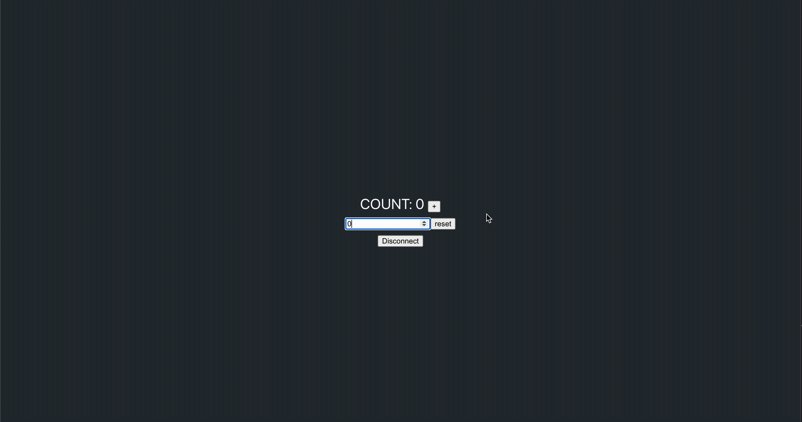

Use Terrain with LocalTerra
LocalTerra is a complete Terra testnet and ecosystem containerized with Docker. Use LocalTerra to simulate transactions in a test environment.
Prerequisites
At least 16 GB of RAM
Node.js version 16
Node version error
Use LTS Node.js 16 if you encounter the following error code:
error:0308010C:digital envelope routines::unsupported
Running NPM on M1 Macs
Some M1 macs may need to use the latest LTS version of Node to complete this tutorial. Consider using a node version manager such as NVM. After installing NVM, run the following to install and use the latest LTS version of node:
nvm install --lts
nvm use --lts
The nvm use --lts command will need to be run every time you open a new terminal to use the LTS version of node.
To default to the LTS version of node when restarting your terminal, run the following:
nvm alias default <INSERT NODE VERSION HERE>
Install and run LocalTerra
To download LocalTerra, run the following commands:
git clone --branch v0.5.2 --depth 1 https://github.com/terra-money/localterraStart LocalTerra by running the following:
cd localterra docker-compose upYou will start seeing LocalTerra block activity in your terminal. Keep LocalTerra running while you perform the next steps in a new terminal window.
LocalTerra Accounts
To view the LocalTerra wallet information, visit the LocalTerra accounts page. For more configuration options, visit the LocalTerra configuration page.
Counter tutorial
After installing LocalTerra, you are ready to use Terrain. This short tutorial walks you through setting up your project and creating a simple counter.
1. Scaffold your dApp
With Terrain installed you can now scaffold your new application in a new terminal window:
Create a new folder for your dApp:
terrain new my-terra-dapp
Tip
If you are using an M1 Mac, see Running NPM on M1 Macs before proceeding.
Scaffold your dApp:
cd my-terra-dapp npm install
Project structure
The following structure shows your scaffolded project:
.
├── contracts # The contracts' source code.
│ ├── counter
│ └── ... # Add more contracts here.
├── frontend # The front-end application.
├── lib # Predefined functions for task and console.
├── tasks # Predefined tasks.
├── keys.terrain.js # Keys for signing transactions.
├── config.terrain.json # Config for connections and contract deployments.
└── refs.terrain.json # Deployed code and contract references.
2. Deploy
To deploy the application, run the following command:
terrain deploy counter --signer test1
The deploy command performs the following steps automatically:
Builds the counter smart contract.
Optimizes the counter smart contract.
Uploads counter smart contract to LocalTerra.
Instantiates the deployed smart contract.
Increase Docker memory
If you are running LocalTerra and the previous deploy command is not working, try increasing Docker’s memory allowance by clicking on the Docker icon. Click Preferences and then Resources. Increase the memory to at least 4 gigs. Click Apply & Restart. Run the deploy command again. You can increase again to 6 gigs if you are still having trouble.
3. Interact with the deployed contract
The template comes with several predefined helpers in lib/index.js. Use them to start interacting with your smart contract:
Run the following:
terrain console
With the console open, increment the counter by running the following:
await lib.increment()
You can get the current count by using:
await lib.getCount()
After incrementing once,
await lib.getCount()will return:{ count: 1 }
Tip
Before proceeding to the next section, kill the running command in your terminal by entering “Ctrl + C” .
4. Front-end scaffolding
Terrain also scaffolds a very simple front-end:
Open the Terra Station Chrome extension, click the gear icon, and switch the network to Localterra.
To use the front end, run the following commands in order. The
terrain sync-refscommand copies your deployed contract addresses to the front-end part of the codebase.terrain sync-refs cd frontend npm install npm start
Open the Terra Station extension and click Add a wallet. Click Recover wallet and input the following seed phrase to access the sole validator on the LocalTerra network and gain funds to get started with smart contracts:
satisfy adjust timber high purchase tuition stool faith fine install that you unaware feed domain license impose boss human eager hat rent enjoy dawn
With LocalTerra selected in Terra Station and the local seed phrase imported, you can now increment and reset the counter from the front end.
Demo

Advanced usage
For more advanced use cases, like deploying to the testnet or mainnet, see Terrain’s readme.